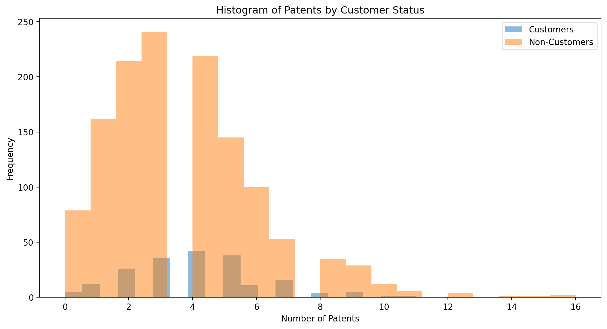

Poisson Regression Examples
Blueprinty Case Study
Introduction
Blueprinty is a small firm that makes software for developing blueprints specifically for submitting patent applications to the US patent office. Their marketing team would like to make the claim that patent applicants using Blueprinty’s software are more successful in getting their patent applications approved. Ideal data to study such an effect might include the success rate of patent applications before using Blueprinty’s software and after using it. unfortunately, such data is not available.
However, Blueprinty has collected data on 1,500 mature (non-startup) engineering firms. The data include each firm’s number of patents awarded over the last 5 years, regional location, age since incorporation, and whether or not the firm uses Blueprinty’s software. The marketing team would like to use this data to make the claim that firms using Blueprinty’s software are more successful in getting their patent applications approved.
Data
Customers: Approximately 4.09 patents on average
Non-Customers: Approximately 3.62 patents on average
Both distributions appear right-skewed, indicating that a majority of both customers and non-customers have a lower number of patents, with fewer entities holding a higher number of patents.
There is some overlap between the two distributions, but it is visible that customers tend to have slightly more patents on average.
/var/folders/d6/rkl47jp12n963654hbtmzlkh0000gn/T/ipykernel_26689/2034835876.py:9: FutureWarning:
Passing `palette` without assigning `hue` is deprecated and will be removed in v0.14.0. Assign the `x` variable to `hue` and set `legend=False` for the same effect.
sns.boxplot(x='iscustomer', y='age', data=blue, palette='coolwarm')- As we can see in the plots, blueprints has more customers from Northeast region and has a average age lower than those who are not customers.
Estimation of Simple Poisson Model
Since our outcome variable of interest can only be small integer values per a set unit of time, we can use a Poisson density to model the number of patents awarded to each engineering firm over the last 5 years. We start by estimating a simple Poisson model via Maximum Likelihood.
- The log-likelihood for \(Y \sim \text{Poisson}(\lambda)\) is equal to \(\sum_{i=1}^n \left(-\lambda + Y_i \log \lambda - \log Y_i! \right)\)
Code
import numpy as np
from scipy.special import factorial
from scipy.optimize import minimize_scalar
def poisson_log_likelihood(lam, y):
return np.sum(-lam + y * np.log(lam) - np.log(factorial(y)))
# Extract the 'patents' data
patents = blue['patents'].values
# Lambda values for which we want to compute the log-likelihood
lambda_values = np.linspace(0.1, 10, 400)
log_likelihood_values = [poisson_log_likelihood(lam, patents) for lam in lambda_values]
# Plotting
plt.figure(figsize=(10, 6))
plt.plot(lambda_values, log_likelihood_values, label='Log-Likelihood')
plt.xlabel('lambda')
plt.ylabel('Log-Likelihood')
plt.title('Log-Likelihood of Poisson Distribution for Different lambda')
plt.legend()
plt.show()
# Finding the MLE of lambda
def neg_poisson_log_likelihood(lam, y):
""" Negative log-likelihood for optimization purposes. """
return -poisson_log_likelihood(lam, y)
result = minimize_scalar(neg_poisson_log_likelihood, bounds=(0.1, 10), args=(patents,), method='bounded')
lambda_mle = result.x- The MLE is approximately equal to 3.68 patents
Estimation of Poisson Regression Model
Next, we extend our simple Poisson model to a Poisson Regression Model such that \(Y_i = \text{Poisson}(\lambda_i)\) where \(\lambda_i = \exp(X_i'\beta)\). The interpretation is that the success rate of patent awards is not constant across all firms (\(\lambda\)) but rather is a function of firm characteristics \(X_i\). Specifically, we will use the covariates age, age squared, region, and whether the firm is a customer of Blueprinty.
Using sm.GLM
Code
from sklearn.preprocessing import OneHotEncoder
import statsmodels.api as sm
# Checking using sm.GLM
# Computing age squared
blue['age_squared'] = blue['age'] ** 2
# Convert 'region' into dummy variables
encoder = OneHotEncoder(drop='first') # Drop first to avoid dummy variable trap
region_dummies = encoder.fit_transform(blue[['region']]).toarray() # Convert to dense array if needed
region_dummy_df = pd.DataFrame(region_dummies, columns=encoder.get_feature_names_out(['region']))
# Joining the dummy variables with the original dataframe
data_prepared = blue.join(region_dummy_df)
# Display the prepared data
data_prepared.head()
# Defining the independent variables and the dependent variable
X = data_prepared.drop(columns=['patents', 'region'])
y = data_prepared['patents']
# Adding a constant to the model (intercept)
X = sm.add_constant(X)
# Fitting a Poisson regression model
poisson_model = sm.GLM(y, X, family=sm.families.Poisson()).fit()Compute Manually
Code
from scipy.optimize import minimize
import numpy as np
from scipy.special import gammaln
from sklearn.preprocessing import StandardScaler
def poisson_log_likelihood(beta, X, y):
eta = X @ beta
lambda_ = np.exp(eta)
log_likelihood = -np.sum(lambda_) + np.sum(y * eta - gammaln(y + 1))
return -log_likelihood
initial_beta = np.zeros(X.shape[1])
result = minimize(poisson_log_likelihood, initial_beta, args=(X.values, y.values), method='BFGS')
# Scaling the features (excluding the constant and binary/dummy variables)
scaler = StandardScaler()
X_scaled = X.copy()
numeric_features = ['age', 'age_squared'] # These are the numeric features we want to scale
X_scaled[numeric_features] = scaler.fit_transform(X[numeric_features])
initial_beta_scaled = np.zeros(X_scaled.shape[1])
result_scaled = minimize(poisson_log_likelihood, initial_beta_scaled, args=(X_scaled.values, y.values), method='BFGS')Values in () represents manual results
Age: The coefficient is 0.1445(1.046), indicating that, holding other variables constant, each additional year of age is associated with a 14.45% increase in the expected count of patents.
Age Squared: The coefficient is -0.0029(-1.141), suggesting that the effect of age on the patent count decreases at a rate proportional to the square of age. This represents the diminishing returns of age on patent counts.
Is Customer: The coefficient is 0.1181(0.118), which means that being a customer of Blueprinty is associated with an 11.81% increase in the expected count of patents, controlling for other factors.
Region (Reference: Midwest):
Northeast: Shows a positive coefficient of 0.0986(0.099), indicating a higher patent count compared to the Midwest.
Northwest: Shows a very slight decrease in log count of patents by -0.0201(-0.020) compared to the Midwest, though this is not statistically significant.
South: Shows an increase by 0.0572(0.057) in log count, not statistically significant.
Southwest:Similar to South, shows a slight increase by 0.0513(0.051), also not statistically significant.
Both my manual and Python function results show being a customer of Blueprinty is associated with 12% increase in the expected count of patents. Thus, I concluded that Blueprinty’s software is very useful when it comes to patent application success chance.
AirBnB Case Study
Introduction
AirBnB is a popular platform for booking short-term rentals. In March 2017, students Annika Awad, Evan Lebo, and Anna Linden scraped of 40,000 Airbnb listings from New York City. The data include the following variables:
Preparing the Data
Code
airbnb_data = pd.read_csv('data/airbnb.csv')
# Drop the 'Unnamed: 0' as it is just an index column and convert date columns to datetime
airbnb_data.drop(columns=['Unnamed: 0'], inplace=True)
airbnb_data['last_scraped'] = pd.to_datetime(airbnb_data['last_scraped'])
airbnb_data['host_since'] = pd.to_datetime(airbnb_data['host_since'])
# Handling missing values by imputation
# For bathrooms and bedrooms, fill missing values with the median (common practice for count data)
# For review scores, impute with the median (since they are ratings out of 10, median is a reasonable choice)
median_values = {
'bathrooms': airbnb_data['bathrooms'].median(),
'bedrooms': airbnb_data['bedrooms'].median(),
'review_scores_cleanliness': airbnb_data['review_scores_cleanliness'].median(),
'review_scores_location': airbnb_data['review_scores_location'].median(),
'review_scores_value': airbnb_data['review_scores_value'].median()
}
airbnb_data.fillna(median_values, inplace=True)
# Encoding categorical variables using one-hot encoding
airbnb_data = pd.get_dummies(airbnb_data, columns=['room_type', 'instant_bookable'], drop_first=True)Plotting Number of Reviews
Code
import matplotlib.pyplot as plt
import seaborn as sns
# Setting the aesthetics for the plots
sns.set(style="whitegrid")
# Distribution of number of reviews
plt.figure(figsize=(12, 6))
sns.histplot(airbnb_data['number_of_reviews'], bins=30, kde=True)
plt.title('Distribution of Number of Reviews')
plt.xlabel('Number of Reviews')
plt.ylabel('Frequency')
plt.show()- We see that the plot for number of reviews is heavily right skewed, indicating most of the listings have only a few reviews and listings with high number of reviews are on the more extreme side of this dataset.
Building model
Code
import statsmodels.api as sm
# Convert all columns explicitly to float, except for the ones already identified as categorical, which will be integers
columns_to_convert = ['days', 'bathrooms', 'bedrooms', 'price', 'review_scores_cleanliness',
'review_scores_location', 'review_scores_value']
for col in columns_to_convert:
airbnb_data[col] = airbnb_data[col].astype('float64')
# Prepare the data for the model
X = airbnb_data.drop(columns=['id', 'number_of_reviews', 'last_scraped', 'host_since'])
y = airbnb_data['number_of_reviews']
# Add a constant to the independent variable set
X = sm.add_constant(X)
# Attempt to fit the Poisson regression model again, converting X explicitly to ensure no 'object' dtype slips through
try:
X = X.astype('float64')
poisson_model = sm.GLM(y, X, family=sm.families.Poisson()).fit()
model_summary = poisson_model.summary()
except Exception as e:
model_summary = str(e)Days (days): Coefficient is positive (≈0.00005), indicating a small but positive association between the length of listing duration and the number of reviews. This implies that for each additional day a listing is available, the expected log count of reviews increases slightly.
Bathrooms (bathrooms): Coefficient is negative (−0.1161), suggesting that listings with more bathrooms tend to have slightly fewer reviews. This might indicate larger properties are booked less frequently.
Bedrooms (bedrooms): Coefficient is positive (0.0702), meaning that additional bedrooms are associated with an increase in the number of reviews, possibly indicating that larger capacity listings attract more guests/reviews.
Price (price): Coefficient is negative (−0.0002), indicating that higher prices are associated with fewer reviews, suggesting price sensitivity among bookers.
Review Scores (Cleanliness, Location, Value): All have significant impacts. Higher cleanliness scores increase the review count (positive coefficient), whereas better location and value scores are associated with fewer reviews (negative coefficients), which might suggest that expectations are higher in well-located or good value properties, affecting review behaviors.
Room Type: Listings that are private rooms (−0.1457) or shared rooms (−0.4171) have fewer reviews compared to entire homes/apartments, with shared rooms showing a much stronger negative effect.
Instant Bookable (instant_bookable_t): Having the listing available for instant booking is positively associated with the number of reviews (0.3468), suggesting that ease of booking contributes to more bookings and hence more reviews.